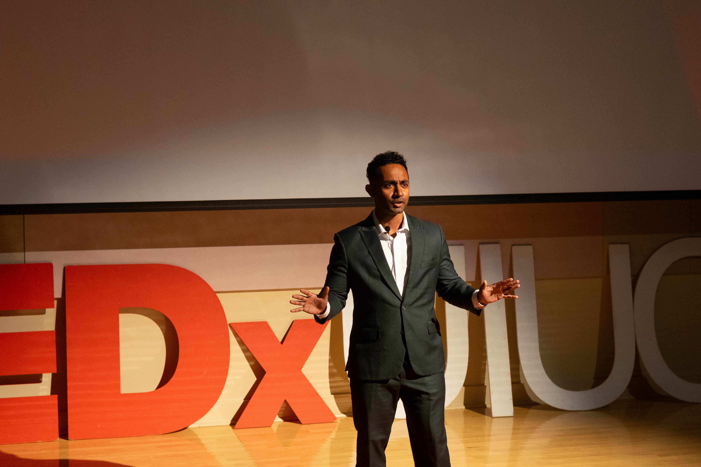

WHO WE ARE AT TEDxUIUC
Discover the story behind TEDxUIUC and our mission to bring ideas worth spreading to the University of Illinois community.
What is TED?
TED is a nonprofit organization devoted to Ideas Worth Spreading. Started as a four-day conference in California 26 years ago, TED has grown to support those world-changing ideas with multiple initiatives. At TED, the world's leading thinkers and doers are asked to give the talk of their lives in 18 minutes. Talks are then made available, free, at TED.com.
TED speakers have included Bill Gates, Jane Goodall, Elizabeth Gilbert, Sir Richard Branson, Benoit Mandelbrot, Philippe Starck, Ngozi Okonjo-Iweala, Isabel Allende and former UK Prime Minister Gordon Brown. Two major TED events are held each year: The TED Conference in Long Beach, California and TEDGlobal in Edinburgh, Scotland.
What is TEDx?
In the spirit of ideas worth spreading, TEDx is a program of local, self-organized events that bring people together to share a TED-like experience. At a TEDx event, TEDTalks video and live speakers combine to spark deep discussion and connection in a small group.
These local, self-organized events are branded TEDx, where x = independently organized TED event. The TED Conference provides general guidance for the TEDx program, but individual TEDx events are self-organized (subject to certain rules and regulations).
About TEDxUIUC
TEDxUIUC aims to enhance the University of Illinois at Urbana-Champaign and surrounding communities through a TED-like experience. It provides top thinkers and the most remarkable doers a platform to share innovative ideas, inspiring experiences, and limitless passions through presentations, performances, discussions and more at a day-long conference.

Our History
TEDxUIUC was founded in 2012 by a group of passionate students who wanted to bring the TEDx experience to the University of Illinois campus. Since then, we've hosted various successful events featuring speakers from various disciplines and backgrounds.
Our events have covered topics ranging from cutting-edge technology and scientific breakthroughs to social innovation and artistic expression, all united by our commitment to sharing ideas worth spreading.